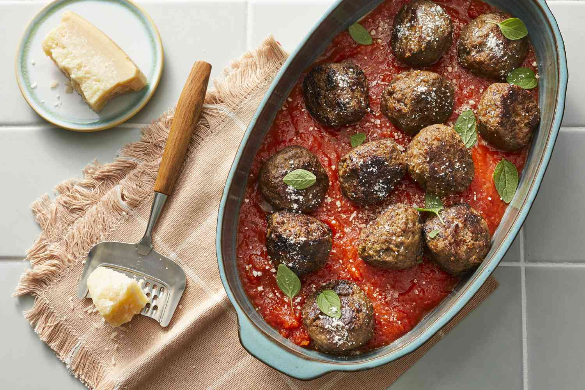

Three-Meat Italian Meatballs

Description
These three-meat meatballs with turkey, beef, and Italian sausage go perfectly with your favorite marinara sauce. Serve over pasta.
Ingredients
- 1 pound ground beef
- 1 pound ground turkey
- 1 pound ground Italian sausage
- 1 large onion, diced
- 2 large eggs
- ½ cup Italian-style seasoned bread crumbs
- ½ cup quick cooking oats
- 2 tablespoons Italian-style seasoning
- 1 cup vegetable oil, or as needed
Steps
- Preheat the oven to 350 degrees F (175 degrees C).
- Combine ground meats, onion, eggs, bread crumbs, oats, and seasoning in a large bowl until well combined. Shape into 24 (2-inch-diameter) meatballs.
- Heat enough vegetable oil in a large sauté pan to be 1/2 inch deep. Cook meatballs in hot oil until browned, about 5 minutes. Transfer to a glass baking dish.
- Bake in the preheated oven for 25 minutes. An instant-read thermometer inserted into the center should read 165 degrees F (75 degrees C).